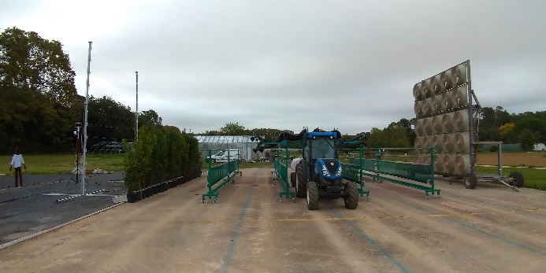
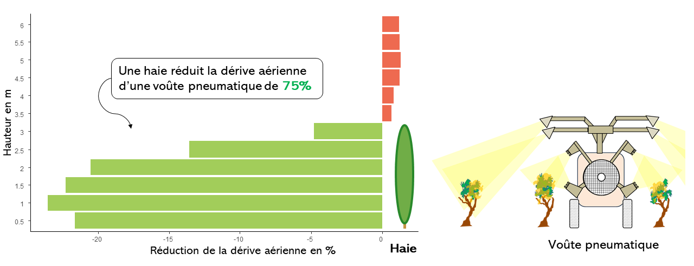

Planter des haies antidérive à proximité des habitations
| Intérêts environnementaux | Intérêts agronomiques | Contraintes de mise en oeuvre | Acceptabilité |
|---|---|---|---|
| Réduction de la dérive des produits phytosanitaires | Protection des sols contre l’érosion, effet brise-vent et régulation thermique, protection de la qualité des eaux. Réservoir de biodiversité | Temps de travail important à l’installation . Entretien régulier nécessaire | Améliore l’image et l’acceptabilité sociale du vignoble |
Une haie disposée au niveau de la limite de la parcelle agricole constitue un écran contre la dérive des produits. De plus, une haie apporte plusieurs services agronomiques et environnementaux : protection des sols contre l’érosion, effet brise-vent, régulation thermique, protection de la qualité des eaux. Elle présente également l’intérêt d’être un réservoir de biodiversité.
Quelle efficacité sur la réduction de dérive ?
Les haies implantées en bordure de parcelle filtrent le courant d’air portant la dérive. Des mesures effectuées derrière des haies dans les différentes cultures montrent des réductions très significatives des quantités de dérive circulant dans l’air ou se déposant au sol immédiatement derrière la haie. Des études visant à étudier les performances des barrières physiques (haies naturelles et filets “anti-dérive”) sont en cours dans le cadre du projet Ecophyto DriftProtect (2023-2024) conduit par l’UMT ECOTECH (IFV-CTIFL-INRAe Montpellier).

Les mesures réalisées ont montré une réduction de 75% de la dérive aérienne d’une voûte pneumatique en présence d’une haie. Ce taux de réduction peut varier selon les caractéristiques physiques de la haie (hauteur, porosité…).

Pour aller plus loin
En alternative à une haie naturelle, la mise en place de filets en bordure de parcelle permet de limiter la dérive de pulvérisation. Il est possible d’utiliser et de déployer les filets antidérives uniquement pendant les traitements, ce qui permet d’écarter les poteaux de 5 à 10 m au lieu de 2 à 3 m comme pour les brise-vent classiques. Ceci permet un moindre coût en matériel et main d’œuvre.
Ressources complémentaires :
Un article sur l’évaluation de l’efficacité des filets anti-dérive.
Une plaquette pdf sur les systèmes anti-dérive.
Sources
Les données de dérive ont été obtenues dans le cadre du projet CAPRIV avec le dispositif EoleDrift de l’UMT EcoTech (Montpellier, France)
Comment obtenir une haie anti-dérive efficace ?
Assurer la présence de végétation lors des traitements
Il faut que le feuillage des espèces constituant la haie soit suffisamment dense pour intercepter les gouttelettes de pulvérisation, dès les premiers traitements et jusqu’à la fin de la période d’application. Privilégier les espèces pérennes ou précoces pour les traitements de début du printemps. La haie doit être dense, homogène et sans interruption.
Assurer une hauteur minimale
Sa hauteur doit être au moins égale à celle de la vigne. Plus la haie est haute, plus celle-ci sera efficace.
Choisir des espèces adaptées
Choisir des espèces diversifiées, locales, faciles à entretenir et éviter les espèces envahissantes : cela permet d’optimiser les services rendus tout en minimisant l’entretien. Mixer les espèces (4-5 espèces différentes) pour apporter de la biodiversité.
Entretenir sa haie
Veiller à avoir une haie homogène et sans trou avec une taille régulière, en automne ou hiver. Prévoir si nécessaire des apports d’eau les premières années. Remplacer les plants morts pour éviter les trouées dans la haie.